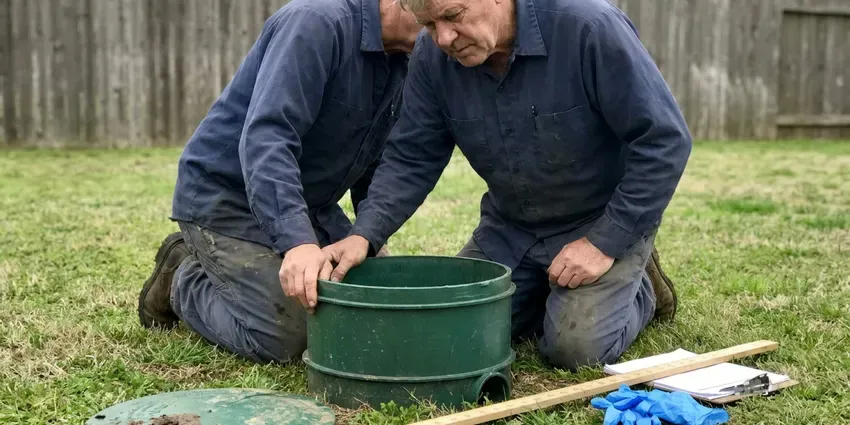

Trenchless Pipe Repair in Vermillion, SD
Trenchless pipe repair in Vermillion, SD means less digging, quicker completion and a new pipe built to last for decades.
- Certified Plumbers
- Jointless, Root-Proof Pipe
- No Trench Across the Yard
- HDPE Pipe Bursting

Repair Your Pipe Without Digging Up the Yard in Vermillion, SD.
Call today for a camera inspection and find out if your line qualifies for lining or bursting.
Low-Impact Trenchless Pipe Repair in Vermillion, SD for Sewer and Water Lines
HWR Plumbing renews underground pipe without opening a trench from the house to the street. The yard mostly stays intact. It is a good fit for local homes with a driveway, mature trees or a patio sitting over the sewer, because the work happens through a cleanout and one small pit.
Work we handle every week:
- HDPE pipe butt fusion and bursting
- Hydro-jetting before lining
- Pipe bursting with HDPE for collapsed or undersized lines

Additional Plumbing Repair Services in Vermillion, SD
We offer expert plumbing repair services across Vermillion, SD to stop leaks, clear blockages, and keep every fixture working the way it should.




Septic Tank Repair in Vermillion

Customers
Why Choose HWR Plumbing for Trenchless Pipe Repair in Vermillion, SD?
Trenchless repair from HWR Plumbing means a lasting pipe with minimal yard damage. The method is chosen for the pipe problems we see most in South Dakota.
- Video Proof, We record the line before and after so you can see the result.
- Root Resistant, New liners and HDPE pipe hold up to roots and rust better than the clay or cast iron they replace.
- Less Digging, One or two small pits take the place of a long dig, saving the lawn and hardscape.
Citywide Coverage
From tight urban lots to larger properties, we bring trenchless repair to every part of Vermillion. We pick pit spots carefully. We plan access points so they land in lawn or gravel instead of under your best landscaping, a stamped patio or a new driveway, and we restore the pit area when the job is done.
Experienced Team
Every HWR Plumbing technician on trenchless jobs has years of hands-on work with the equipment. They keep training. New resins, UV curing systems and lateral reinstatement cutters come out regularly, and our crew learns them on practice runs before they use them in a customer's line.
Safety-First Approach
Local Vermillion, SD codes apply to every trenchless job. Inspections happen when required. That covers the liner materials, the cleanout and transition fittings, and the pit backfill, so the repair passes inspection and protects your property and our crew while the work is going on.
Trusted Certified Vermillion Plumbing Services Professionals
At HWR Plumbing, we take pride in licensed, certified plumbing services throughout Vermillion, SD. Those papers on the wall mean something. Every repair, install and maintenance visit follows strict safety and quality rules, and the plumbers doing the work carry recognized industry credentials.
Call Us Now PHCC Plumbing Contractor Recognition
PHCC Plumbing Contractor Recognition Better Business Bureau (BBB) Accreditation
Better Business Bureau (BBB) Accreditation Angi Certified Pro
Angi Certified Pro ISO 9001 Quality Management Certification
ISO 9001 Quality Management CertificationTrenchless Pipe Repair Services in Vermillion, SD
Commercial Trenchless Pipe Repair in Vermillion
Commercial properties have sewer and storm lines under parking lots, sidewalks and buildings. Tearing it out costs plenty. Trenchless repair avoids that demolition and the disruption to tenants and customers, and we line larger diameter pipe and multiple laterals on a schedule that limits the impact on business.

CIPP Lining for Clay and Cast Iron in Vermillion
Older Vermillion homes often have clay or cast iron sewer pipe. Both fail with age. Roots get into clay joints and cast iron rusts from inside, and a liner seals over both with jointless pipe that should outlast the original. Only one or two access points are needed.
Sectional Point Repair in Vermillion
Sometimes only one joint or a few feet of pipe is bad. That calls for a sectional liner. Guided by camera, a short liner is placed over the bad section and cured, so you pay for a few feet instead of the full line. It suits isolated damage in Vermillion laterals.
Pipe Bursting Trenchless Repair in Vermillion, SD
Bursting works when the pipe has collapsed or is too broken to line. It can go up a size. Our crew sets an entry pit and an exit pit, then pulls a bursting head and new HDPE through on a hydraulic winch, which replaces the full run in a day or two for most homes. HWR Plumbing fuses the HDPE into one length.
Trenchless vs Traditional Repair Cost in Vermillion, SD
Per foot of pipe, trenchless can cost more than open trenching. That's not the whole bill. After adding drive, patio, landscaping and sprinkler repairs to the trench bid, trenchless usually wins on price and speed. We compare both with real numbers for your property.
Emergency Trenchless Pipe Repair in Vermillion, SD
A collapsed sewer line stops every drain in the house. That gets fixed fast. Strong winds deepen the chill by pulling heat away from exterior walls, which raises the risk for pipes running along outside walls. First we clear enough to get flow back, then scope it and book the liner or burst as soon as materials and access allow.
Perma-Liner Trenchless Systems in Vermillion
Perma-Liner is one of the CIPP systems our crews install. It's built for sewer use. The liners and resins are structural, meaning the cured pipe can stand on its own even if the old pipe around it keeps deteriorating, which is why we trust them for local lines. They hold up in tough conditions.

Cost-Effective Underground Pipe Repair in Vermillion, SD
People are often surprised at the final number. Trenchless can cost less. Per foot, lining can look pricey, but once you add the cost of tearing out and replacing a driveway, a patio and the landscaping above an open trench, the trenchless bid usually comes out ahead.
Local Trenchless Pipe Repair in Vermillion, SD
Someone searching trenchless pipe repair near me usually wants the pipe fixed without wrecking the yard. We get that. Our local crews inspect the line, tell you honestly whether lining or bursting fits, and give you a written price before any work starts, along with the camera footage.
Typing 'trenchless pipe repair near me' in Vermillion, SD should get you a local crew. HWR Plumbing is one. Having worked laterals across the area, we can usually guess the pipe material before the camera goes in. That saves time.
HWR Plumbing at a Glance
- Licensed and insured plumbers serving Vermillion, SD
- 24/7 emergency service with same-day scheduling
- Upfront, flat-rate pricing before work begins
- 4.8-star rated by 304+ South Dakota customers
Vermillion Map
Vermillion Information
- Population
- 12,011
- Area codes
- Local
- Service area
- Vermillion and communities within 40 miles
- Nearby
- Yankton, Harrisburg, Tea, Sioux Falls
Basements are common in South Dakota homes, which puts water heaters, softeners and main drains below grade where sump pumps often play a role. Buried sewer and water lines in Vermillion, SD pull apart at joints and crack as that ground moves, and lining renews them without a trench.
Expert Services
Reach out to HWR Plumbing for reliable plumbing work done by licensed pros in Vermillion, SD.
Our Specialized Plumbing Services in Vermillion, SD
At HWR Plumbing, we handle the full list of plumbing services across Vermillion, SD. From leak detection to full system installs, our team works fast and charges fair prices on homes and commercial properties alike. Take a look at our core services below:


Our Trenchless Steps in Vermillion, SD
Most trenchless repairs in Vermillion wrap up in one or two days once the line is cleaned.
Request a Quote
Call (605) 480-9736 and tell us about the backups, leaks or root problems you are having. We schedule a camera inspection.
Inspect and Clean
We camera the line, then hydro-jet it clean to prepare for lining or bursting. You get a written price for the trenchless repair.
Line or Burst
We install the liner or new pipe through small access points. We camera the finished line and backfill the pits.
Frequently Asked Questions About Trenchless Pipe Repair in Vermillion
CIPP lining typically costs $80 to $250 per foot. Bursting runs a bit less per foot. Pipe bursting often runs $60 to $200 per foot plus the access pits, and a typical residential sewer line totals $4,000 to $15,000 depending on length and condition.
Trenchless repair takes specialized equipment, materials and training. It should be done by an experienced contractor.
No, and rental shops don't carry the gear. It takes trained crews. You'd need a jetter, camera, resin setup and inversion rig, and a badly cured liner is tough to remove, so hire a licensed plumber.
CIPP lining jobs usually take one to three days. Bursting adds a little time. Pipe bursting may take slightly more, depending on length and access, but either one is much faster than open trenching, which can stretch to weeks once excavation and restoration are counted.
Usually yes, for sewer and water line work. South Dakota bases its plumbing rules on the Uniform Plumbing Code, and the state licenses plumbers and oversees plumbing inspections. We file it and meet the inspector.
One to three days covers most of them. It depends on footage. Run length, method and the number of laterals to reopen set the timeline, and we keep disruption low the whole time.
Perma-Liner for lining and Picote for pipe prep. Both have long track records. They cure into structural pipe, and Picote cutters reopen laterals cleanly, which is where many lining jobs fail.
An epoxy liner, properly installed, is built to last 50 years or more. HDPE pipe used in bursting has a similar long service life.
What People Are Saying About Our Plumbing Experts?

Patricia H.
We had a slab leak that two other companies could not find. HWR Plumbing located it in under an hour with a listening device. They rerouted the line through the attic instead of breaking up the floor, so we kept our kitchen tile.
Slab Leak Repair · Tea, SD
Mark T.
The floor drain in our office break room backed up every few weeks. The plumber ran a cable, then put a camera down and found roots at a joint about thirty feet out. Seeing it on the screen made the decision easy.
Drain Cleaning · Harrisburg, SD
Lisa C.
Water was pouring out from under the washing machine on a holiday weekend. HWR Plumbing talked me through closing the valves over the phone and had a plumber at the house within ninety minutes. It was a burst fill hose.
Emergency Plumbing · Brandon, SDDiane F.
My kitchen faucet had dripped for months and I finally got tired of hearing it at night. HWR Plumbing came out the next morning, replaced the cartridge and the O rings, and tightened a loose base that was letting water under the sink.
Faucet Repair · Tea, SD
Daniel K.
A pipe burst in the garage ceiling at 11 at night. Someone answered on the second ring, and the plumber was in my driveway about fifty minutes later. He shut off the main, cut out the split section, and had water back on before 2 am.
Emergency Plumbing · Harrisburg, SD
Jessica T.
We were adding a gas range in a kitchen remodel and needed a new line run from the meter. The plumber pulled the permit, ran the pipe through the crawl space, and had it inspected and approved within the week.
Gas Line Repair · Vermillion, SD